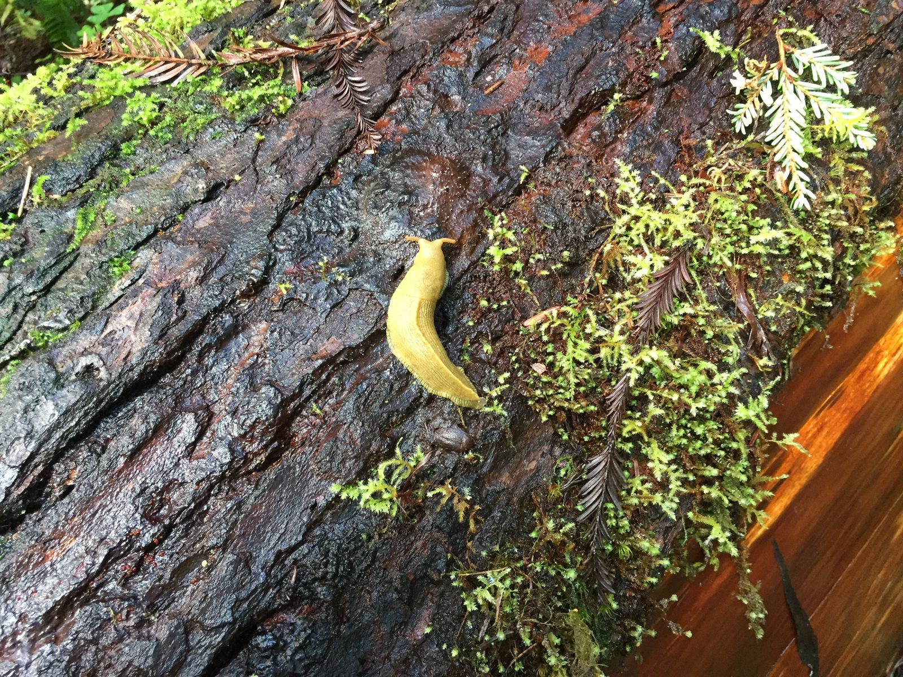
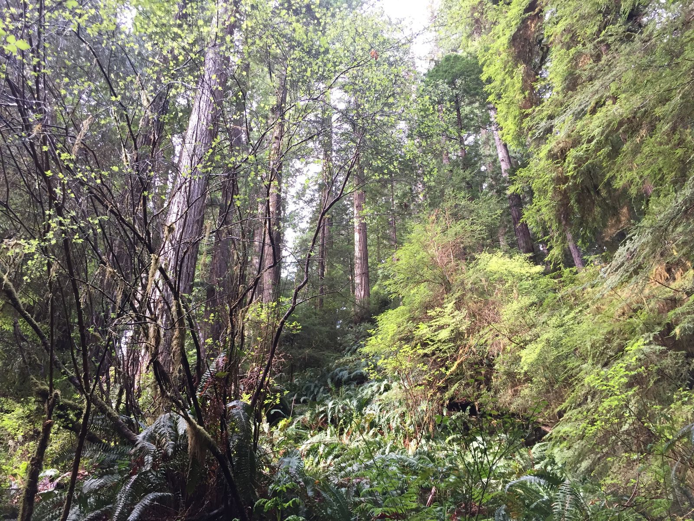
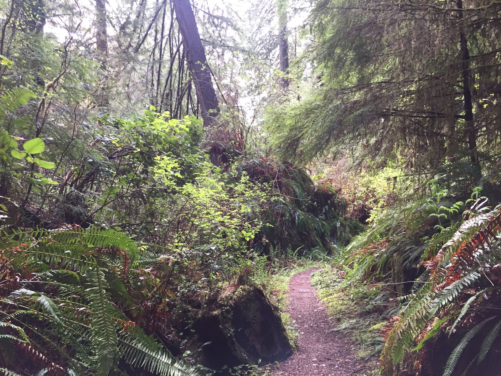
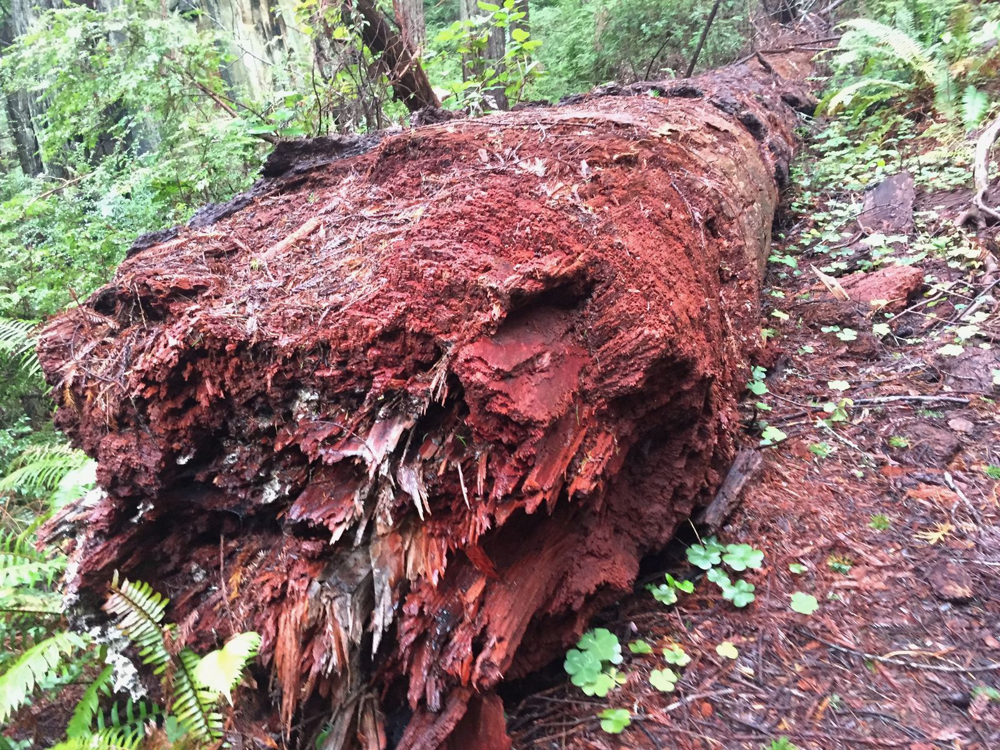
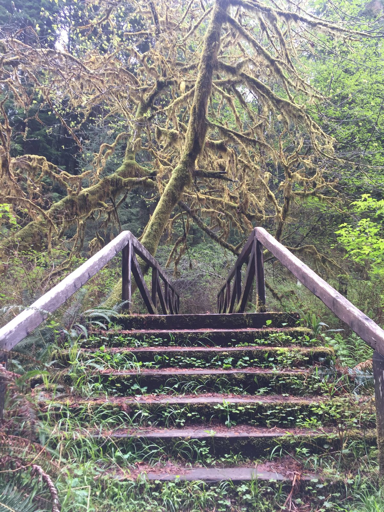
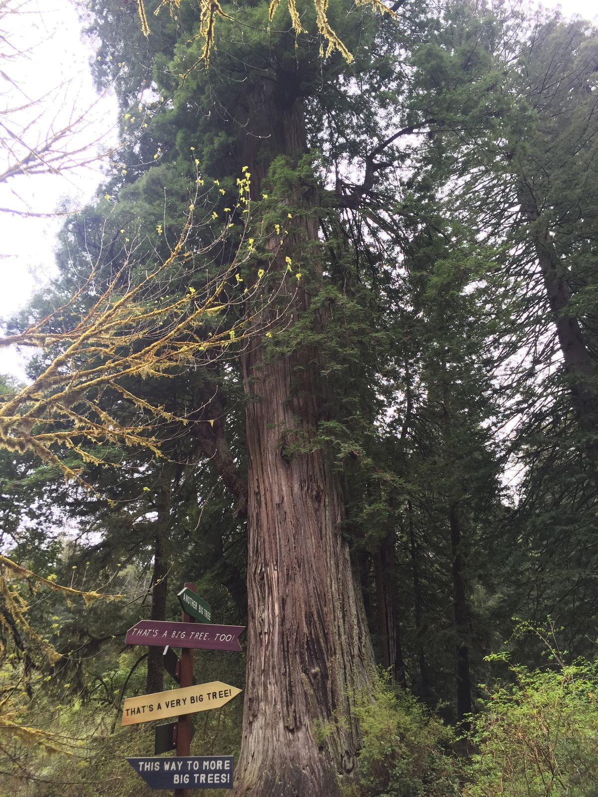
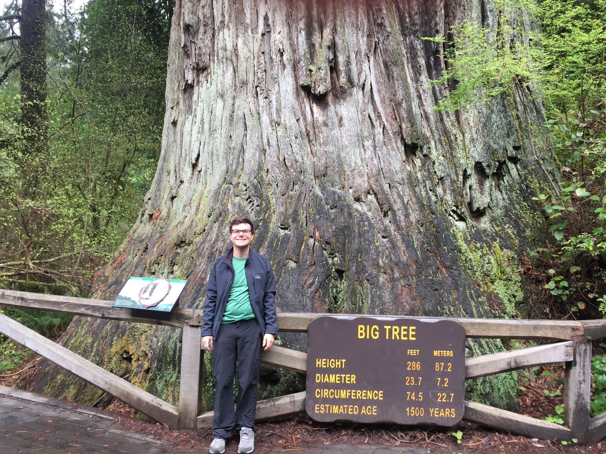
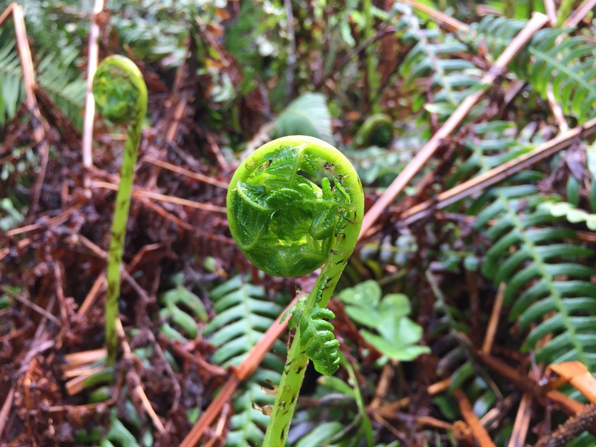

I visited Endor today
Sorry.
The forrest moon of Endor.
Departing my hotel just after 9am, I returned to Prairie Creek Redwoods State Park to hike Zigzag Trail 1 and 2 Loop. The reviews on Alltrails said that there were snails but I didn't see any—just some banana slugs. There was almost no one on the trail. I ran into one couple taking photos at the beginning and then a small group being led by a guide about a quarter way into the hike.

Crossing into Northern California, the signs at the beginning of trails began to warn of bears instead of mountain lions. The signs also recommend not to hike alone. So I had my hiking poles and Bluetooth speaker to alert any potential predator of my existence so that I don't startle them.

Having learned a few days ago that driving through the winding roads of redwood forest is more interesting while listening to John Williams, I was playing the Return of the Jedi soundtrack as I started on the trail. Normally, I dislike any music on the trail—it takes away from the nature—but I made an exception since I was on my own. It worked out quite well, since it looked exactly like the Endor in the movie. I later looked up that the movie actually was filmed in the Redwood National Park.

If it's possible, this area is greener than any other area I've seen so far on this trip. The greens were really GREEN. And the trees were really BIG.


I finished the hike faster than I expected at just over two hours. So I drove to some other areas of the park that had gotten a bit more populated later in the morning. I came across the "big tree" and asked an older couple to take my photo.


Tomorrow I head back to the coast to Yachats, where I was planning on another hike. The forecast, though, calls for more rain, so we will see...
